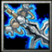
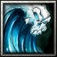

齋藤家臣 羽柴秀吉欣賞他卓越的智謀，於是拔擢為軍師，是羽柴秀吉的大軍師，曾以十六人取得稻葉山城，在岳父安藤守就的支援下取得成功，此舉威震天下，但後來隨秀吉 攻打中國時，於陣中病歿。
智慧型遠戰英雄
法術 ：Ｓ 輔助 ：Ａ 最擅長破塔，輔助進攻及防守 力量：20+1.90 敏捷：23+1.95 智慧：40+3.85 （主要） 
天生技[被動] 孤高的軍師攻擊非英雄部隊及建築物時造成額外50%傷害。 會被法球物品無效。  在自身周圍釋放強烈的數波冰塊襲擊周圍敵人，每一次冰爆都可造成140點 傷害並緩慢敵人移動速度，持續4秒。 耗魔200，等待時間140秒。 18級隱藏技能。 
Ｗ[主動] 式神．水召喚一隻有[600/700/800/900]點生命值的水式神，擁有寒冰凍氣能力： 攻擊時能結凍建築物1.5秒。水元素最久可存活[35/40/45/50]秒。 耗魔[140/160/180/200]，等待時間10秒。 在直線800打出凍結的氣息，造成[150/200/250/300]傷害並把敵人凍結[1/2/3/4]秒。 耗魔[120/140/160/180]，等待時間25秒。 攻擊造成目標冰凍而降低目標30%攻擊及移動速度，持續[1/2/3/4]秒。 冰凍效果無法累積。 Ｔ[主動] 吹雪 在800範圍的區域呼叫[10/12/14]波冰雹；每0.7秒一波造成敵人[210/280/370]點傷害並[6/7/8]秒內每秒再造成[30/45/60]點傷害。 對建築物的傷害減半，需持續施法，施展距離600。 耗魔[260/310]，等待時間170秒。 |